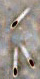

Growing bacteria in glass or plastic |
| Traditional methods for studying the growth and behavior of microbes rely on the ability to grow the organism as a monoculture; a monoculture contains one and only one type of organism. This is not always easy and
in some cases, it may not even be possible. Many organisms
are very particular about their growth requirements and may be dependent
upon products made by other organisms |
It has been estimated that we know how to grow as monocultures only a small percentage of the prokaryotic species that exist in nature. Methods have been developed to identify organisms within their normal habitat, without having to be able to grow them in the lab (or "in culture"). These techniques are useful in defining biological diversity and identifying previously unknown pathogens. |
For E. coli, however, growth conditions are well known and very simple. E. coli is a autotroph; it can synthesize all it needs to grow from water, simple inorganic chemicals and an energy source. E. coli is a chemoautotroph, its extracts the energy it needs through the oxidation of organic compounds. This is contrast to organisms that capture the energy of light, known as photoauxotrophs, and those that extract energy from inorganic compounds, known as chemolithoauxotrophs. |
|
Starting sterile: If you want to study the behavior of a single organism, you need to know that there are no other organisms in your system. To do that you must sterilize all of the instruments, containers and materials you plan to use. |
A sterile system contains no living organisms or viruses. In this system,
the liquid in which microbes grow (the medium)
is sterile; but once the flask is broken - growth is observed. |
|
Laboratory containers used to be made of glass. Glass containers can be sterilized by baking them at high temperatures; In modern labs, plastic containers are more common. Nevertheless, we still refer to organisms grown in the lab as grown in vitro, which means in glass. Plastic containers are sterilized using chemicals or radiation. Most "plastic ware" comes from the manufacturer sterile and is discarded after use. |
Growth media: Early on, scientists such as Redi, Spallanzani and Pasteur used simple solutions, such as beef broth or green infusions (tea) to grow microbes. They boiled their media (the
plural of medium) to sterilize it. |
 |
Boiling does not kill all organisms, however – some thermophilic bacteria flourish at temperatures well above 100°C Moreover, many organism generate spores, which can survive boiling, as well as drying, high levels of radiation, and other rather nasty conditions. Spores are so hardy that it has been suggested that they can travel through interstellar space. |
Francis Crick (the co-discover of DNA's structure) and Leslie Orgel proposed, without any evidence, that "directed panspermia" was used by an alien civilization to distribute life throughout the universe. This proves, perhaps, that even really smart people can be quite silly at times. |
A more effective method for sterilizing media is the use an autoclave, essentially a pressure cooker. Increasing the pressure increases the temperatures that can be attained. In an autoclave, media is heated to 121°C and high pressure, 20 atmospheres. At this pressure, the liquid does not boil. |
Media that has been autoclaved will generally remain sterile as long as the container in which it is place is itself sterile and airtight. For simple media, autoclaving is the method of choice. Some more complex nutrient broths contain molecules that are destroyed at the temperatures used in an autoclave. |
These liquids can be sterilized by passing them through using special filters. These filters have pore sizes so small (>0.2 µm in diameter) that organisms and spores cannot pass through them. These filters will not remove all bacterial viruses however, many of which are smaller than 0.2 µm. In fact viruses were first classified based on the fact that they can pass through such filters! |
 |
|
| Growing coli: E.
coli is a generalist.
It can grow under a wide range of conditions.
An E. coli can synthesize everything it needs from a single simple carbon and energy source and inorganic salts. This type of media is referred to as minimal media |
| |
A minimal media for E.
coli
13.6g KH2PO4 - source of phosphate and a buffer 2.0g (NH4)2SO4 - source of nitrogen and sulfur 0.01g CaCl2 - source of calcium 0.0005g FeSO4(7H20) - source of iron 0.02g MgCl2(7H2O) - source of magnesium 1.0g glucose - source of carbon and energy deionized, distilled (i.e. pure) water to 1 liter pH to 7.2 to 7.4 with 1M NaOH. |
| E. coli grows slowly in minimal media. Why? because it must synthesize all of the complex molecules it needs to build a copy of itself - amino acids, sugars, lipids, nucleotides, vitamins, etc. |
For most routine studies, E. coli are grown in a rich broth, usually Luria-Bertani medium or LB for short. In LB, it grows quite fast. Luria Bertani Medium (LB):
|
The growth of a bacterial culture is typically divided into three phases, known as lag, exponential and stationary phases. During lag phase, the bacteria are adapting to their new environment. In exponential phase, they grow as fast as possible. As resources are exhausted and waste produces accumulate, growth slows and the culture enters stationary phase. |
|
Use Wikipedia |
revised 18 March 2005 |